If there is a need to read the contents of a file inside a message flow of an already active proxy service, then neither the File Transport nor the FTP transport can be of any help. Reading a file with the File or FTP Transport is always only available inbound, implemented as a polling operation and starting a new message flow/proxy service upon detecting a new file.
This recipe will show how we can use the File JCA adapter to read a file at runtime, for example, to enrich data at runtime or to retrieve some configuration information. The JCA adapters are available since OSB 11g and are the same ones we know from the SOA Suite.
We will create a business service wrapping the artifacts created by the JCA adapter wizard in JDeveloper. By that the business service is just as any other business service seen so far and can be invoked from a proxy service using a Routing or Service Callout action as shown in this recipe.
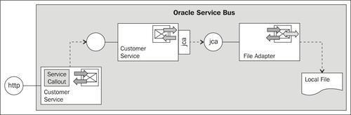
The scenario shown can be helpful if you need to retrieve some configuration data or you'll have to enrich the message, and the data is already available as a file.
Import the base OSB project containing the folder structure and the nested JDeveloper project as shown in recipe Setting up OSB project to work with JCA adapters into Eclipse from \chapter-6\getting-ready\reading-a-file-within-a-message-flow.
First, we will use JDeveloper to create the File adapter, using the nested SOA project inside the adapter folder of the Eclipse OEPE project. In JDeveloper, perform the following steps:
AdapterSOAProject.jpr file inside the adapter folder of the OSB project, by selecting File | Open. composite.xml file to open the SCA composite. \chapter-6\getting-ready\reading-a-file-within-a-message-flow\Properties.xsd and paste it into the xsd folder inside the SOA project: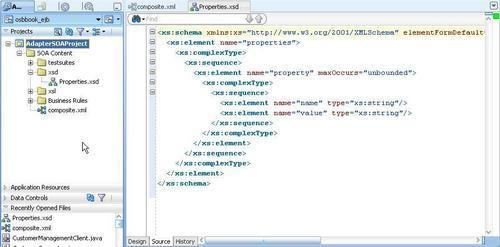
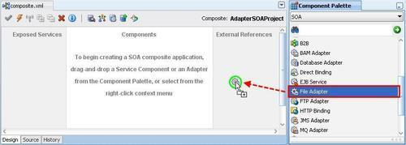
FileReadingService into the Service Name field and click Next. SynchRead in the Operation Name field and click Next.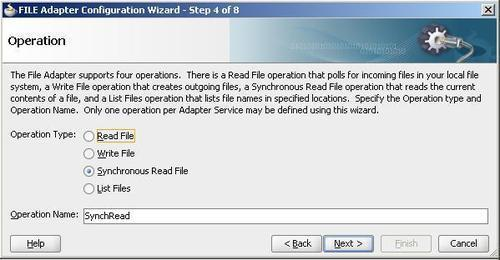
C:\work\files\in into the Directory for Incoming Files field.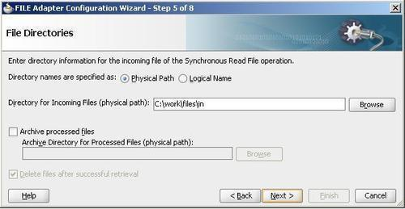
Properties.xml into the File Name field and click Next. xsd/Properties.xsd into the URL field.This is all we have to do in JDeveloper to get the necessary artifacts describing the File adapter service. We can now go back to Eclipse OEPE and generate a business service based on the JCA metadata.
In Eclipse OEPE, perform the following steps:
adapter folder inside the OSB project.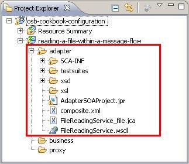
FileReadingService_file.jca file and select Oracle Service Bus | Generate Service to generate a business service based on the JCA adapter definition. business folder in the Select the location for the WSDL and Service tree. FileReadingService into the Service name and WSDL name field and click OK.The business service is generated. We could already use it like that. But we have to configure the adapter to not remove the file after reading it. In Eclipse OEPE, perform the following steps to configure the business service:
false.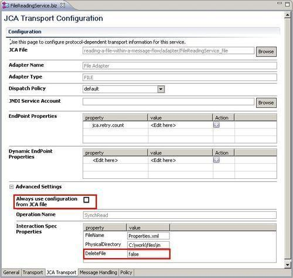
Next we will create the proxy service, which will invoke the business service generated previously, through a Service Callout action.
proxy folder, create a new proxy service and name it FileReader. ReadFilePipelinePair. FileReadStage.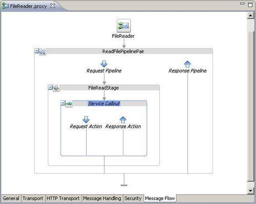
fileRequest into the Request Variable field and fileResponse into the Response Variable field: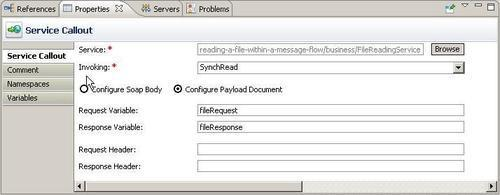
\chapter-6\getting-ready\reading-a-file-within-a-message-flow\misc\Properties.xml into the c:\temp\in\files folder.Now we're ready to test the service. On the Service Bus console perform the following steps:
proxy folder. fileResponse variable.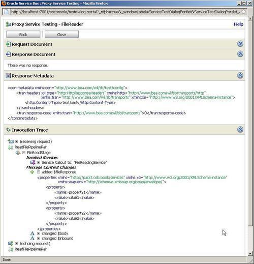
In this recipe, we have used the File JCA adapter for reading files from the local filesystem (local to the OSB server) from within a message flow of a proxy service. With the File Transport, reading a file can only be used in a polling scenario, where a proxy service together with the File Transport constantly polls for new files to arrive and a new message flow is started for each file. So the file itself is the trigger when using the File Transport. When using the File JCA adapter, the operation on the file (write or read) is exposed as a service and being wrapped by an OSB business service it can be invoked as any other service. The JCA adapter actually creates a WSDL, which acts as the contract for the service, although behind the scenes, JCA is used as the protocol and not SOAP or HTTP.
We have used the Service Callout action to invoke the File adapter service, but we could have used a Routing action as well. Reading a file is typically only one of the (preparing) steps in a proxy flow and a Service Callout action needs to be used, as no further (request) actions can follow a Routing action in a message flow.
In this section, we show how to set file/folder names dynamically at runtime and how to read a file through an XQuery script, as an alternative to the File JCA adapter.
When going through the File adapter in JDeveloper, we have specified the file and directory name to be used for reading the file. These settings are used at runtime, if not overwritten by the invoker. To overwrite them, we can use the Transport Header action inside the Service Callout and specify some JCA-specific transport header properties.
In Eclipse OEPE, open the FileReader proxy service and perform the following steps:
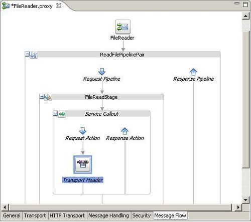
data($body/configuration/location[1]/filename). data($body/configuration/location[1]/directory).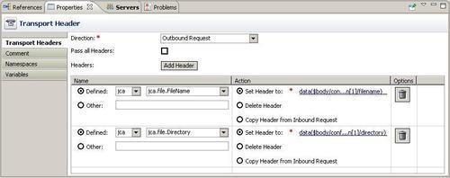
\chapter-6\getting-ready\reading-a-file-within-a-message-flow\misc\OtherProperties.xml into the c:\temp\in\files folder.Now, let's test the change. In Service Bus console, perform the following steps:
proxy folder.<configuration> <location> <directory>c:\work\files\in</directory> <filename>OtherProperties.xml</filename> </location> </configuration>
fileResponse variable.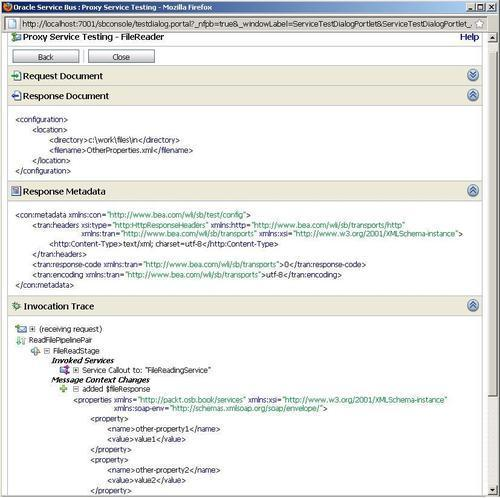
Another possibility for reading a file from the local filesystem from a proxy service is by using the XQuery doc function.
To read a file through XQuery, perform the following steps in Eclipse OEPE:
xquery folder and copy the file \chapter-6\getting-ready\reading-a-file-within-a-message-flow\misc\ReadFile.xq into that folder.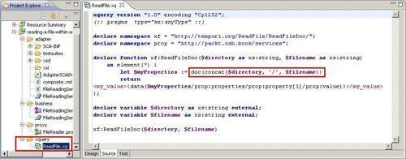
xqueryFileResponse into the Variable field. xquery folder. data($body/configuration/location[1]/directory) into the directory field. data($body/configuration/location[1]/directory) into the filename field.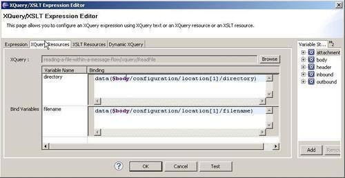
Now, let's test the change. In Service Bus console, perform the following steps:
proxy folder.<configuration> <location> <directory>c:\work\files\in</directory> <filename>OtherProperties.xml</filename> </location> </configuration>
xqueryFileResponse variable.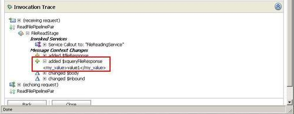